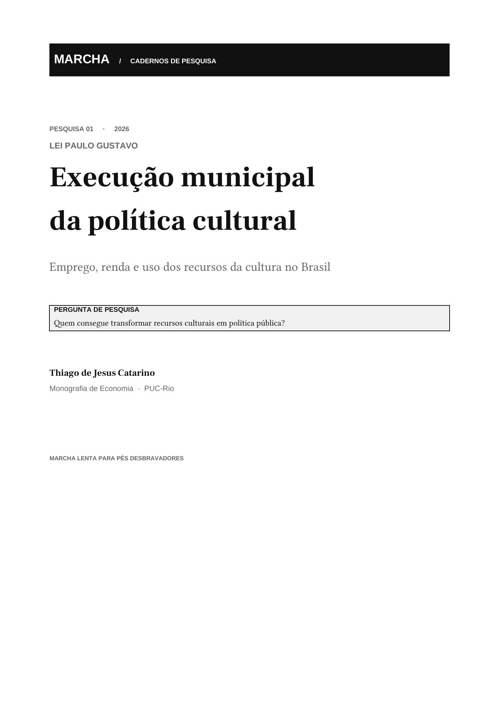

Uma pesquisa,
muitas camadas.
O caderno é a publicação principal. Dados, método, código, gráficos e referências compõem o acervo de apoio; cada material deve indicar seu contexto, recorte e fonte.

CADERNO DE PESQUISA · 2026
Marcha lenta para pés desbravadores
Emprego, renda e utilização dos recursos da cultura após a pandemia de COVID-19 no Brasil
Como os municípios brasileiros executaram os recursos da Lei Paulo Gustavo? O estudo examina padrões de uso e seus vínculos com características municipais, explicitando os limites para qualquer interpretação causal.
Thiago de Jesus Catarino · Economia da cultura · Política cultural
01 · DADOSBases e recortes usados na análise, com documentação de origem e período. Fontes citadas no estudo incluem MinC, RAIS/MTE, IBGE, Siconfi/STN, INEP e TSE.
02 · MÉTODOEstratégia de diferenças-em-diferenças e modelos de determinantes, acompanhados de pressupostos e limites de interpretação.
03 · CÓDIGOScripts e instruções de reprodução serão publicados com descrição do ambiente, das etapas e das fontes utilizadas.
04 · GRÁFICOS E REFERÊNCIASVisualizações com legenda e origem dos dados; bibliografia e referências completas no caderno de pesquisa.